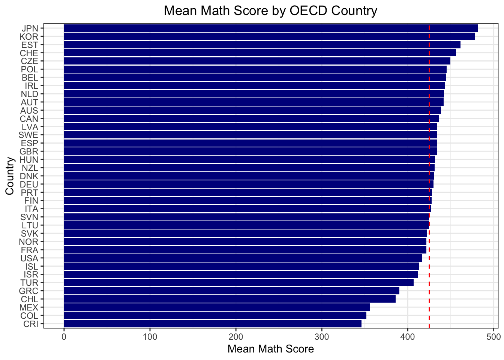
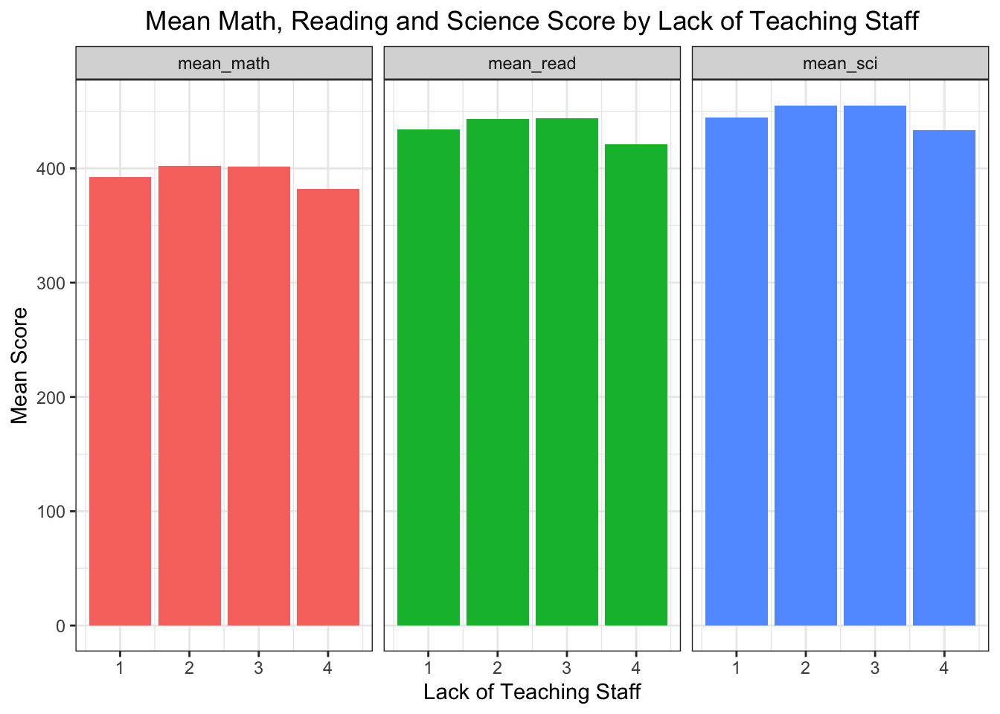
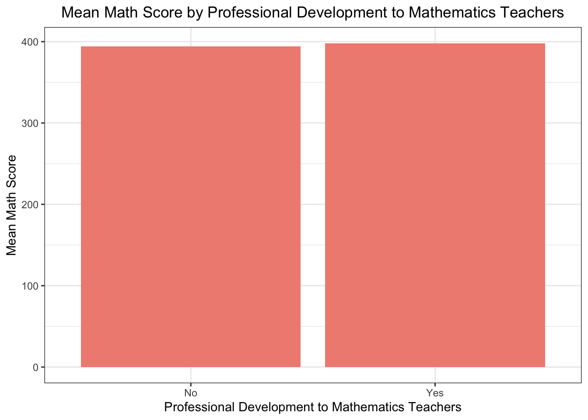
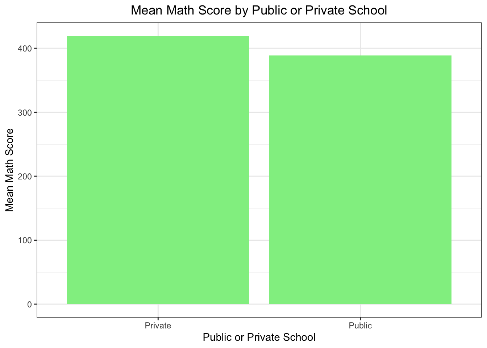

4.1 | PISA 2022 Analysis: A Comprehensive Examination of OECD Countries
4.1.1 | Introduction
The Program for International Student Assessment (PISA) 2022, focusing on reading, science, and mathematics proficiency, has provided a wealth of insights into the educational landscape of OECD countries. This analysis seeks to delve into the nuances of the data, examining key takeaways, exploring data preparation processes, and uncovering trends related to teaching staff, professional development, and school type in relation to student performance.
4.1.2 | Key Takeaways
Top Scorers and Surprising Performances
Top Scorers: Notable achievements were observed in Far Eastern countries such as Korea and Japan, along with Eastern European nations like Estonia, Poland, and the Czech Republic.
Surprising Performances: Finland, renowned for its education model, exhibited a performance that fell below expectations. Similarly, advanced nations like Germany, France, and the USA demonstrated only average results.
Teaching Staff Impact
Lack of Teaching Staff: An intriguing observation emerged; schools experiencing either no or excessive shortages in teaching staff witnessed a noticeable drop in mathematics performance. However, schools with moderate shortages showed a comparatively smaller impact.
Professional Development and School Type
Professional Development: Surprisingly, there was no discernible difference in student performance based on whether schools provided professional development opportunities to mathematics teachers or not.
School Type: The duality between public and private schools did not significantly influence student performance.
4.1.3 | Data Preparation
The 2022 student and school questionnaire data files from the PISA 2022 database were meticulously processed. Downloaded in .sav format, they were converted to .csv format for ease of analysis in Python. The resulting datasets were then merged based on relevant variables, creating a comprehensive dataset for further exploration in R.
Code
library(tidyverse)
── Attaching core tidyverse packages ──────────────────────── tidyverse 2.0.0 ──
✔ dplyr 1.1.3 ✔ readr 2.1.4
✔ forcats 1.0.0 ✔ stringr 1.5.0
✔ ggplot2 3.4.4 ✔ tibble 3.2.1
✔ lubridate 1.9.3 ✔ tidyr 1.3.0
✔ purrr 1.0.2
── Conflicts ────────────────────────────────────────── tidyverse_conflicts() ──
✖ dplyr::filter() masks stats::filter()
✖ dplyr::lag() masks stats::lag()
ℹ Use the conflicted package (<http://conflicted.r-lib.org/>) to force all conflicts to become errors
Code
library(dplyr)library(ggplot2)library(scales)
Attaching package: 'scales'
The following object is masked from 'package:purrr':
discard
The following object is masked from 'package:readr':
col_factor
Graph 1: Average Mathematics Score by OECD Countries
Code
pisa_mean <- pisa_mean %>%arrange(desc(mean_math))ggplot(pisa_mean, aes(x =reorder(CNT, mean_math), y = mean_math)) +geom_bar(stat ="identity", fill ="darkblue") +#highlight the average valuegeom_hline(yintercept =425, linetype ="dashed", color ="red") +coord_flip() +labs(title ="Mean Math Score by OECD Country",x ="Country",y ="Mean Math Score") +theme_bw() +theme(plot.title =element_text(hjust =0.5))

Intriguingly, mean scores across all three subjects were lower in countries where there was no lack of teaching staff compared to schools with some shortage. However, as anticipated, a severe shortage of teaching staff led to a decline in mean scores.
Graph 2: Mean Scores by Lack of Teaching Staff
Code
# SC017Q01NA Instruction hindered by: A lack of teaching staff #Not at all # Very little # To some extent # A lot#pisa$SC017Q01NA# group by SC017Q01NA calculate mean math score , mean read score and mean sci scorepisa_lack_of_teaching_staff <- pisa %>%group_by(SC017Q01NA) %>%summarise(mean_math =mean(mean_math, na.rm =TRUE),mean_read =mean(mean_read, na.rm =TRUE),mean_sci =mean(mean_sci, na.rm =TRUE)) pisa_lack_of_teaching_staff <- pisa_lack_of_teaching_staff %>%filter(!is.na(SC017Q01NA))# line plotpisa_lack_of_teaching_staff %>%gather(key ="subject", value ="score", mean_math, mean_read, mean_sci) %>%ggplot(aes(x = SC017Q01NA, y = score, fill = subject)) +geom_bar(position ="dodge", stat="identity") +labs(title ="Mean Math, Reading and Science Score by Lack of Teaching Staff", x ="Lack of Teaching Staff",y ="Mean Score") +facet_grid(. ~ subject) +theme_bw() +theme(plot.title =element_text(hjust =0.5)) +theme(legend.position ="none")

Contrary to expectations, the availability or lack of professional development opportunities did not exhibit a significant impact on student scores, as evidenced by Graph 3.
Graph 3: Professional Development Impact
Code
# SC184*** mean math score, mean read score and mean sci score "Does your school offer professional development to# mathematics teachers in any of the following?#pisa$SC184Q01JA # 1Yes 2No# set 1 as yes and 2 as nopisa_SC184Q01JA <- pisa %>%mutate(SC184Q01JA =ifelse(SC184Q01JA ==1, "Yes", "No"))# drp the NA pisa_SC184Q01JA <- pisa_SC184Q01JA %>%filter(!is.na(SC184Q01JA))professional_development_to_mathematics_teachers <- pisa_SC184Q01JA %>%group_by(SC184Q01JA) %>%summarise(mean_math =mean(mean_math, na.rm =TRUE))# line plot normalize the dataggplot(professional_development_to_mathematics_teachers, aes(x = SC184Q01JA, y = mean_math)) +geom_bar(stat ="identity", fill ="#F08D81") +labs(title ="Mean Math Score by Professional Development to Mathematics Teachers",x ="Professional Development to Mathematics Teachers",y ="Mean Math Score") +theme_bw() +theme(plot.title =element_text(hjust =0.5))

Code
#pisa_SC184Q01JA$SC184Q01JA
The implications of Graph 4 are profound: the overall educational experience and environment play a crucial role in student performance, transcending the influence of professional development opportunities.
School type, whether public or private, did not emerge as a significant factor in determining student achievement. The conclusion drawn is that the quality of teaching staff plays a more substantial role in student success.
Graph 4: Mean Math Score By School Type
Code
# SC013 Is your school a public or a private school?#pisa$SC013Q01TA# group by SC013Q01TA calculate mean math score # 1Public 2Privatepisa_SC013Q01TA <- pisa %>%group_by(SC013Q01TA) %>%summarise(mean_maths =mean(mean_math, na.rm =TRUE)) pisa_SC013Q01TA$SC013Q01TA <-ifelse(pisa_SC013Q01TA$SC013Q01TA ==1, "Public", "Private")# drop naspisa_SC013Q01TA <- pisa_SC013Q01TA %>%filter(!is.na(SC013Q01TA))# plot the dataggplot(pisa_SC013Q01TA, aes(x = SC013Q01TA, y = mean_maths)) +geom_bar(stat ="identity", fill ="#90EE90") +labs(title ="Mean Math Score by Public or Private School",x ="Public or Private School",y ="Mean Math Score") +theme_bw() +theme(plot.title =element_text(hjust =0.5))

4.1.5 | OECD Findings
Mathematics Proficiency: Singapore emerged as the highest scorer, surpassing all other countries with a score of 575 points. Six other nations, including Hong Kong (China), Japan, Korea, Macao (China), and Chinese Taipei, also outperformed the OECD average.
High-Performing Students: Approximately 69% of students in OECD countries demonstrated proficiency in mathematics. Notably, 16 out of 81 countries had more than 10% of students attaining Level 5 or 6 proficiency.
Striking Results
Teaching Staff Shortage: The shortage of mathematics teachers emerged as a critical factor significantly affecting student performance. Schools with no or excessive shortages witnessed a substantial decrease in mathematics achievement, emphasizing the need for a balanced teacher supply.
Professional Development: Surprisingly, no significant relationship was found between professional development opportunities for mathematics teachers and student achievement. This underscores the necessity for educational institutions to review and enhance their professional development programs.
School Type: The distinction between public and private schools did not show a significant effect on student achievement. This highlights the paramount importance of focusing on other factors, particularly the quality of teaching staff.
4.1.6 | Conclusion
In conclusion, this in-depth analysis of PISA 2022 data unveils the intricate dynamics influencing student success.
Addressing shortages in teaching staff, refining professional development programs, and prioritizing overall educational quality are pivotal strategies for institutions aspiring to elevate student achievements. The findings presented here provide valuable insights for educators, policymakers, and institutions seeking to enhance the educational experience and outcomes for students in the ever-evolving global landscape.
For a detailed exploration, including graphs and additional insights, please refer to the complete analysis.
Source Code
---title: "PISA 2022 Final Report"date: "2023-12-30"editor: visualcode-fold: truecode-tools: true---## \| PISA 2022 Analysis: A Comprehensive Examination of OECD Countries### \| Introduction<iframewidth="560"height="315"src="https://www.youtube.com/embed/dCwfI8ehIvY"title="YouTube video player"frameborder="0"allow="accelerometer; autoplay; clipboard-write; encrypted-media; gyroscope; picture-in-picture; web-share"allowfullscreen></iframe></iframe>The Program for International Student Assessment (PISA) 2022, focusing on reading, science, and mathematics proficiency, has provided a wealth of insights into the educational landscape of OECD countries. This analysis seeks to delve into the nuances of the data, examining key takeaways, exploring data preparation processes, and uncovering trends related to teaching staff, professional development, and school type in relation to student performance.### \| Key Takeaways**Top Scorers and Surprising Performances**- **Top Scorers:** Notable achievements were observed in Far Eastern countries such as Korea and Japan, along with Eastern European nations like Estonia, Poland, and the Czech Republic.- **Surprising Performances:** Finland, renowned for its education model, exhibited a performance that fell below expectations. Similarly, advanced nations like Germany, France, and the USA demonstrated only average results.**Teaching Staff Impact**- **Lack of Teaching Staff:** An intriguing observation emerged; schools experiencing either no or excessive shortages in teaching staff witnessed a noticeable drop in mathematics performance. However, schools with moderate shortages showed a comparatively smaller impact.**Professional Development and School Type**- **Professional Development:** Surprisingly, there was no discernible difference in student performance based on whether schools provided professional development opportunities to mathematics teachers or not.- **School Type:** The duality between public and private schools did not significantly influence student performance.### \| Data PreparationThe 2022 student and school questionnaire data files from the PISA 2022 database were meticulously processed. Downloaded in .sav format, they were converted to .csv format for ease of analysis in Python. The resulting datasets were then merged based on relevant variables, creating a comprehensive dataset for further exploration in R.```{r}library(tidyverse)library(dplyr)library(ggplot2)library(scales)library(RColorBrewer)# library(ggridges)library(knitr)load("pisa.RData")pisa <- pisa %>%select(-X)pisa$SUMMATH <-rowSums(pisa[, 5:14], na.rm =TRUE)pisa$mean_math <-rowMeans(pisa[, 5:14], na.rm =TRUE)pisa$SUMREAD <-rowSums(pisa[, 15:24], na.rm =TRUE)pisa$mean_read <-rowMeans(pisa[, 15:24], na.rm =TRUE)pisa$SUMSCI <-rowSums(pisa[, 25:34], na.rm =TRUE)pisa$mean_sci <-rowMeans(pisa[, 25:34], na.rm =TRUE)pisa_mean <- pisa %>%filter(OECD_x ==1) %>%group_by(CNT) %>%summarise(mean_math =mean(mean_math, na.rm =TRUE),mean_read =mean(mean_read, na.rm =TRUE),mean_sci =mean(mean_sci, na.rm =TRUE))pisa_mean_mean <- pisa_mean %>%summarise(mean_mean =mean(mean_math))print(pisa_mean_mean)```### \| Graphs and Inferences**Graph 1: Average Mathematics Score by OECD Countries**```{r}pisa_mean <- pisa_mean %>%arrange(desc(mean_math))ggplot(pisa_mean, aes(x =reorder(CNT, mean_math), y = mean_math)) +geom_bar(stat ="identity", fill ="darkblue") +#highlight the average valuegeom_hline(yintercept =425, linetype ="dashed", color ="red") +coord_flip() +labs(title ="Mean Math Score by OECD Country",x ="Country",y ="Mean Math Score") +theme_bw() +theme(plot.title =element_text(hjust =0.5))```Intriguingly, mean scores across all three subjects were lower in countries where there was no lack of teaching staff compared to schools with some shortage. However, as anticipated, a severe shortage of teaching staff led to a decline in mean scores.**Graph 2: Mean Scores by Lack of Teaching Staff**```{r}# SC017Q01NA Instruction hindered by: A lack of teaching staff #Not at all # Very little # To some extent # A lot#pisa$SC017Q01NA# group by SC017Q01NA calculate mean math score , mean read score and mean sci scorepisa_lack_of_teaching_staff <- pisa %>%group_by(SC017Q01NA) %>%summarise(mean_math =mean(mean_math, na.rm =TRUE),mean_read =mean(mean_read, na.rm =TRUE),mean_sci =mean(mean_sci, na.rm =TRUE)) pisa_lack_of_teaching_staff <- pisa_lack_of_teaching_staff %>%filter(!is.na(SC017Q01NA))# line plotpisa_lack_of_teaching_staff %>%gather(key ="subject", value ="score", mean_math, mean_read, mean_sci) %>%ggplot(aes(x = SC017Q01NA, y = score, fill = subject)) +geom_bar(position ="dodge", stat="identity") +labs(title ="Mean Math, Reading and Science Score by Lack of Teaching Staff", x ="Lack of Teaching Staff",y ="Mean Score") +facet_grid(. ~ subject) +theme_bw() +theme(plot.title =element_text(hjust =0.5)) +theme(legend.position ="none")```Contrary to expectations, the availability or lack of professional development opportunities did not exhibit a significant impact on student scores, as evidenced by Graph 3.**Graph 3: Professional Development Impact**```{r}# SC184*** mean math score, mean read score and mean sci score "Does your school offer professional development to# mathematics teachers in any of the following?#pisa$SC184Q01JA # 1Yes 2No# set 1 as yes and 2 as nopisa_SC184Q01JA <- pisa %>%mutate(SC184Q01JA =ifelse(SC184Q01JA ==1, "Yes", "No"))# drp the NA pisa_SC184Q01JA <- pisa_SC184Q01JA %>%filter(!is.na(SC184Q01JA))professional_development_to_mathematics_teachers <- pisa_SC184Q01JA %>%group_by(SC184Q01JA) %>%summarise(mean_math =mean(mean_math, na.rm =TRUE))# line plot normalize the dataggplot(professional_development_to_mathematics_teachers, aes(x = SC184Q01JA, y = mean_math)) +geom_bar(stat ="identity", fill ="#F08D81") +labs(title ="Mean Math Score by Professional Development to Mathematics Teachers",x ="Professional Development to Mathematics Teachers",y ="Mean Math Score") +theme_bw() +theme(plot.title =element_text(hjust =0.5))#pisa_SC184Q01JA$SC184Q01JA```The implications of Graph 4 are profound: the overall educational experience and environment play a crucial role in student performance, transcending the influence of professional development opportunities.School type, whether public or private, did not emerge as a significant factor in determining student achievement. The conclusion drawn is that the quality of teaching staff plays a more substantial role in student success.**Graph 4: Mean Math Score By School Type**```{r}# SC013 Is your school a public or a private school?#pisa$SC013Q01TA# group by SC013Q01TA calculate mean math score # 1Public 2Privatepisa_SC013Q01TA <- pisa %>%group_by(SC013Q01TA) %>%summarise(mean_maths =mean(mean_math, na.rm =TRUE)) pisa_SC013Q01TA$SC013Q01TA <-ifelse(pisa_SC013Q01TA$SC013Q01TA ==1, "Public", "Private")# drop naspisa_SC013Q01TA <- pisa_SC013Q01TA %>%filter(!is.na(SC013Q01TA))# plot the dataggplot(pisa_SC013Q01TA, aes(x = SC013Q01TA, y = mean_maths)) +geom_bar(stat ="identity", fill ="#90EE90") +labs(title ="Mean Math Score by Public or Private School",x ="Public or Private School",y ="Mean Math Score") +theme_bw() +theme(plot.title =element_text(hjust =0.5))```### \| OECD Findings- Mathematics Proficiency: Singapore emerged as the highest scorer, surpassing all other countries with a score of 575 points. Six other nations, including Hong Kong (China), Japan, Korea, Macao (China), and Chinese Taipei, also outperformed the OECD average.- High-Performing Students: Approximately 69% of students in OECD countries demonstrated proficiency in mathematics. Notably, 16 out of 81 countries had more than 10% of students attaining Level 5 or 6 proficiency.**Striking Results**- Teaching Staff Shortage: The shortage of mathematics teachers emerged as a critical factor significantly affecting student performance. Schools with no or excessive shortages witnessed a substantial decrease in mathematics achievement, emphasizing the need for a balanced teacher supply.- Professional Development: Surprisingly, no significant relationship was found between professional development opportunities for mathematics teachers and student achievement. This underscores the necessity for educational institutions to review and enhance their professional development programs.- School Type: The distinction between public and private schools did not show a significant effect on student achievement. This highlights the paramount importance of focusing on other factors, particularly the quality of teaching staff.### \| ConclusionIn conclusion, this in-depth analysis of PISA 2022 data unveils the intricate dynamics influencing student success.Addressing shortages in teaching staff, refining professional development programs, and prioritizing overall educational quality are pivotal strategies for institutions aspiring to elevate student achievements. The findings presented here provide valuable insights for educators, policymakers, and institutions seeking to enhance the educational experience and outcomes for students in the ever-evolving global landscape.For a detailed exploration, including graphs and additional insights, please refer to the complete analysis.